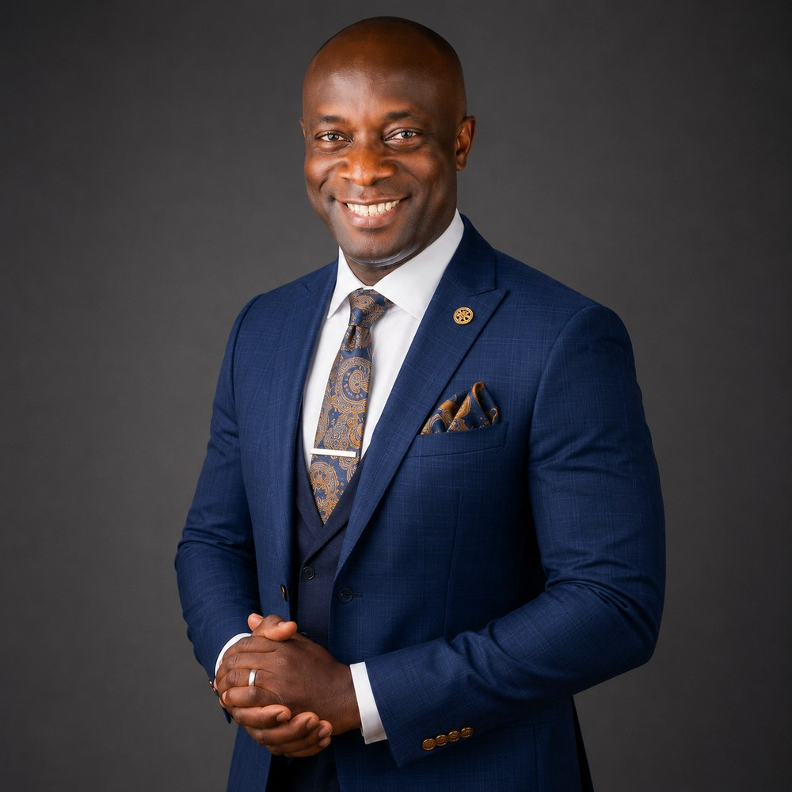

Holy Nation Global
Holy Nation Global
An inter-denominational, Christ-centred, Bible-based non-governmental apostolic commission — born in Nigeria in 2012 to awaken the Church to the full revelation of Jesus Christ, and to establish the government of Christ in every place.
God is using The Holy Nation to restore the revelation of Christ to the Church as the centre of God's eternal plan and purpose for man. This is what is missing in the Church today, and God is speedily at work restoring the Church back to the revelation of Christ so His people can be perfected and ready for His return.
The Holy Nation is a divine structure in which believers are “being built upon the foundation of the apostles and prophets, with Jesus Christ Himself the cornerstone.” It forms the spiritual womb for the true apostolic reformation to emerge in the land — a divine machinery for the restoration of the apostolic in Africa.
The Holy Nation will birth leaders and believers who know how to manoeuvre in the spirit world and take their generation out of troubled waters.
We are not a denomination and we do not seek to become one. In matters of denominational conveniences and peculiarities, denominations continue as they are. But in matters of enforcing the Kingdom in a space — in any agenda recognised in heaven that advances the cause of the Kingdom — all denominations ought to function as one apostolic body, one Kingdom, one leadership, one direction.
Our strategy is to use the revelation of Christ to drive the Kingdom Development Strategy (KDS) — an elaborate, Spirit-led, holistic Church response to the situation the Church has found itself in.
KDS is the construction of a gigantic spirit-social infrastructure: a bottom-to-top grassroots believers' architecture drawn from all denominations and every human sector, for the purpose of developing a Kingdom superstructure spiritual enough, powerful enough, strategic enough and wealthy enough to transform, influence, shape and reorder the nation and God's people, according to the prophecy in Isaiah 9:2–7.
The KDS will transform the present Church structure into a strategic and many-sided Kingdom nation — mobilised and empowered as an end-time force, a body of active sons of God, capable of restoring the dignity of the believer, the glories of the Christian faith, and the setting up of a Christ-driven society.
Four convictions that shape everything this commission does.
We believe that Jesus Christ, our resurrected Lord and Saviour, is the supreme Governor and Government of the whole universe. Matthew 28 says, “All power and authority in heaven and earth has been given to Him.” In Ephesians 1:21, He has sovereign rule over every ruler, authority, government and realm of power in existence; He is gloriously enthroned over every name that is ever praised, both now and in the age to come. Therefore we believe that as His Body, we rule — and can rule — on the world's fate for Him.
We believe that “the kingdoms, systems of control or governments of this world would become the kingdom of our God and of His Christ,” as John spoke by apocalyptic revelation concerning these last days, in Revelation 11:15.
Jesus taught His disciples in Matthew 6:9–10 to pray: “Our Father in Heaven, hallowed be Your name. Your kingdom come. Your will be done on earth as it is in heaven.” We believe our Father's heavenly kingdom — the place we dwell and are seated with Him — is a place of abundance, love, joy, peace and ever-flowing prosperity; and that God's good pleasure and mandate to us, enshrined in Genesis 1:26 and Luke 12:32, is to seek to colonise earth with these ideals and attributes of His Kingdom.
Paul, speaking in Romans 8:18–19, reveals the glories which shall be revealed in the sons in the last days: “The earnest expectation of the creation eagerly waits for the manifestation of the sons of God.” We believe that as the Body of Christ and sons on earth, we have been called to manifest Christ's goodness, His creative superiority, His might, dominion and prosperity on earth for the benefit of the world.
Jesus promised to build His Church, and the gates of hell would not prevail against it. After His return to heaven the Church was empowered at Pentecost, and the first apostolic era saw the phenomenal spread of the Word of God. But after the apostles left the scene there was much falling away; heresy and apostasy crept in through false teaching and philosophy, and the apostolic foundation laid by the apostles was temporarily abandoned.
God has begun a second and final phase of His power over the Church in these end times. He is preparing His Bride for the Marriage Supper — and this Bride is the Third-Day Church, characterised by purity and power (Ephesians 5:26). The people who make up this glorious Church will operate in the full knowledge of the revelation of Christ, carrying His glory, nature, likeness and Spirit. God is presently gleaning them out of every nation, denomination and from the world system, bringing them together and equipping them as a formidable force.
As we await the return of the Lord, it is time to re-engage the Holy Spirit for Kingdom action in every place where we are.
Teaching the revelation of Christ to believers — King of heaven and earth, Governor of nations, lawful owner of all things — whose person and revelation secure the dominion image mandatory for the believer to function as apostolic sons, masters and ambassadors.
Gen 1:26 · Eph 4:13 · 2 Cor 5:20Tailoring unity in every place as one Kingdom, one action, one embassy, one spirit, one mind — so that denominations continue in their peculiarities, but function as one apostolic body wherever the Kingdom is being enforced.
John 17 · Acts 2:1 · Acts 4:32Training and coaching believers to reign as restored rulers in the world — recovering the atmosphere of the Kingdom which Adam lost, securing the power required for rulership, and installing the apostolic dominion and influence culture.
Eph 4:23 · Ps 82:6 · Col 3:10Taking responsibility for all segments and spheres of influence of the nation — discipling nations, colonising every community, and speaking, praying and executing the justice, prosperity, good leadership and peace that reign in the Kingdom.
Matt 28:18 · Isa 61:1-4 · Matt 16:19As we await the return of the Lord and Master, it is time to re-engage the Holy Spirit for Kingdom action in every place where we are. It is time for churches and believers to unite and strategise for the emergence of the Kingdom in our nation and in our domains. The Kingdom is rising.

David Abraham is an Apostle and the President of The Holy Nation Global — an international apostolic and Kingdom platform that provides spiritual fellowship, covering, apostolic intelligence and Kingdom order in the Body of Christ globally.
He is a unique apostolic voice in Nigeria, in high demand across nations of the world, and a celebrated speaker on Christ, sonship, apostolic reformation, the present-day move of God, and the emergence of the Kingdom.
Graduated in Biological Sciences
Under Bishop David Oyedepo
Further theological formation
Dr. David Oyedepo, Apostle Chuck Pierce, Bill Hamon, Andrew Wommack, Kobus van Rensburg and other apostolic ministries
Christ · Sonship · Apostolic Reformation · The Present-Day Move of God · The Emergence of the Kingdom
The Holy Nation commenced operation in 2012 in Nigeria as a non-governmental apostolic commission, functioning as an apostolic system for the Body of Christ in Nigeria and other nations.
The Holy Nation commences operation in Nigeria as a non-governmental apostolic commission, set up to function as an apostolic system for the Body of Christ in Nigeria and beyond.
The training arms of THN have recruited and trained over twenty thousand ministers in more than twenty states of Nigeria, as well as in Ghana, Cameroun and South Africa.
Mission fields established in every state and nation where ministers have been trained, with apostolic missionaries working in several states — including violence-affected and insecure parts of Africa.
Unity-driven apostolic meetings in remote and local government areas of Nigeria bring thousands of ministers together, fostering cohesion and driving prayer and evangelism at grassroots level.
Schemes established for the Church and for vulnerable groups — women, children and ministers of the Gospel — prioritising poverty alleviation, community intervention, health, education and basic upkeep.
Participation in national processes aimed at bringing restoration and healing to Nigeria, including several federal delegations to Israel for prayer and consultation.
THN has influenced the Body of Christ such that the perception and manner in which ministry is done in this part of the world has tangibly changed, with the Church beginning to see a more Christ-driven approach.
Thirteen commitments through which we work to establish the government of Christ in every place.
Initiates and drives the KDS — a Spirit-led, holistic Church response building a Kingdom superstructure from the grassroots up.
Promotes and brings the Body of Christ in every place into alignment with the present-day move of God for the second coming of Christ.
Keeps a prophetic Kairos clock and divine appointment schedule for the Church, keeping her linked to heavenly things in Christ.
Drives apostolic strategies, reformation initiatives and prayer and teaching conferences toward the Third-Day Church agenda.
Establishes believers' groupings and Ecclesia, Kingdom families and Kingdom communities for social re-engineering and leadership reconstruction.
Builds a strong Ministers Body, Youths Congress, Business & Leaders Roundtable and Women Action organisation.
Promotes unity through the teaching of the revelation of Christ and a corporate spiritual engineering environment.
Engages in massive outreaches that promote, grow and strengthen the churches and denominations of network members.
Provides equipping, training and empowerment for ministers and their leaderships.
Offers counselling, mentorship and fatherly care for ministers and leaders within the network.
Undertakes internationally recognised commissioning of leaders, licensing and ordination for trained leaders.
Initiates social re-engineering, governmental and social interventions for the benefit of the Kingdom of Christ.
Furthers international travel facilitation for members to advance the Gospel, participate in pilgrimages and pursue global Kingdom networking.
The arms through which the commission operates.
The apostolic house and Ecclesia — where believers gather to receive apostolic teaching, fellowship and impartation.
Kingdom formations, families and communities established for social re-engineering and leadership reconstruction.
Training, equipping, licensing and internationally recognised ordination for ministers and leaders.
Covering, apostolic intelligence and Kingdom order for ministers and congregations across nations.
The connected body of ministers, business leaders, students, women and youth across every demographic.
Apostolic prayer, outreach and mission carrying the Gospel to cities, states and nations.
The discipleship structure through which believers are formed, mentored and multiplied.
The twelve domains through which the Kingdom is carried into every sector of national life.
Trinity Park, by Benue Links Park,
Garki, Abuja, Nigeria
It is time for churches and believers to unite and strategise for the emergence of the Kingdom in our nation and in our domains.